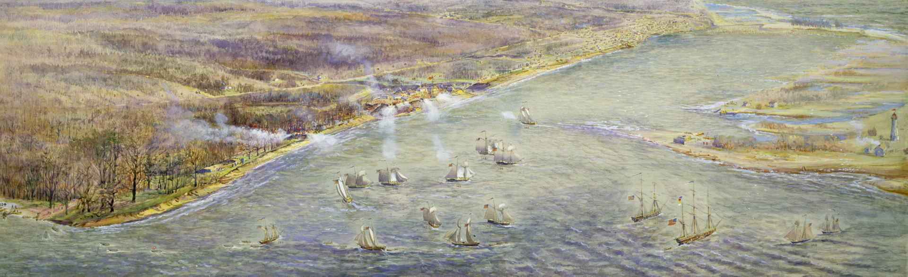
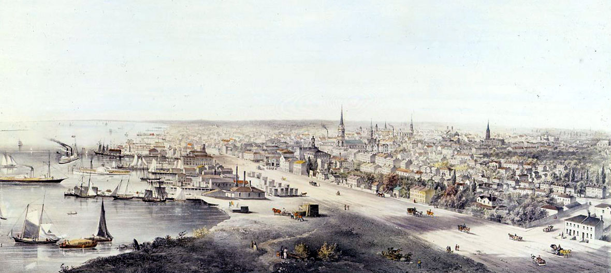
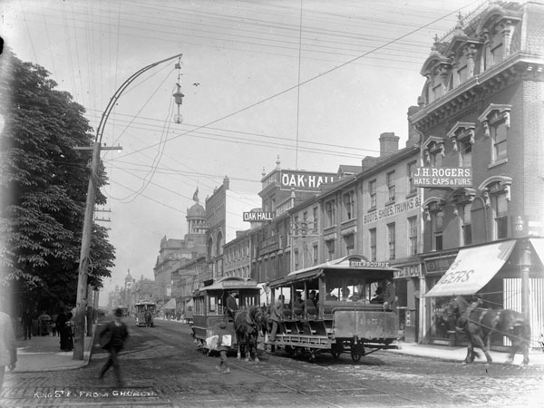

Pre-19th century
The site of Toronto lay at the entrance to one of the oldest routes to the northwest, a route known and used by
the Huron, Iroquois, and Ojibwe, and was of strategic importance from the beginning of Ontario's recorded
history.
In the 1660s, the Iroquois established two villages within what is today Toronto,
Ganatsekwyagon on the banks of the Rouge River and Teiaiagon on the banks of the Humber River. By 1701,
the Mississaugas had displaced the Iroquois, who abandoned the Toronto area at the end of the Beaver Wars, with
most returning to their homeland in present-day New York.
French traders founded Fort Rouillé in
1750 , but abandoned it in 1759 during the Seven Years' War. The British defeated the French and their
indigenous allies in the war, and the area became part of the British colony of Quebec in 1763.
During the
American Revolutionary War, an influx of British settlers came here as United Empire Loyalists fled for
the British-controlled lands north of Lake Ontario. The Crown granted them land to compensate for their losses
in the Thirteen Colonies. In 1787, the British Lord Dorchester arranged for the Toronto Purchase with
the Mississaugas of the New Credit First Nation, thereby securing more than a quarter of a million acres of land
in the Toronto area. The first 25 years after the Toronto purchase was quiet, although "there were occasional
independent fur traders" present in the area, with the usual complaints of debauchery and drunkenness.
American forces attacked York in 1813 In 1793, Governor John Graves Simcoe established the town of York on the Toronto Purchase lands, naming it after Prince Frederick, Duke of York and Albany. Simcoe decided to move the Upper Canada capital from Newark to York, believing the new site would be less vulnerable to attack by the United States. The York garrison was built at the entrance of the town's natural harbour, sheltered by a long sand-bar peninsula. The town's settlement formed at the harbour's eastern end behind the peninsula, near the present-day intersection of Parliament Street and Front Street .
19th century
In 1813, as part of the War of 1812, the Battle of York ended in the town's capture and plunder
by United States forces. John Strachan negotiated the town's surrender. American soldiers destroyed much of the
garrison and set fire to the parliament buildings during their five-day occupation. Because of the sacking of
York, British troops retaliated later in the war with the burning of Washington, D.C.
York was incorporated as the City of Toronto on March 6, 1834. Reformist politician William Lyon
Mackenzie became the first mayor of Toronto and led the unsuccessful Upper Canada Rebellion of
1837 against the British colonial government.
As a major destination for immigrants to Canada, the city grew
rapidly through the remainder of the 19th century. The first significant wave of immigrants were Irish, fleeing
the Great Irish Famine; most of them were Catholic. By 1851, the Irish-born population had become the largest
single ethnic group in the city. The Scottish and English population welcomed smaller numbers of Protestant
Irish immigrants, some from what is now Northern Ireland, which gave the Orange Order significant and
long-lasting influence over Toronto society.
For brief periods, Toronto was twice the capital of the united Province of Canada: first from 1849 to
1852, following unrest in Montreal, and later 1856–1858. After this date, Quebec was designated as the capital
until 1866 . Since then, the capital of Canada has remained Ottawa, Ontario.Long before the Royal Military
College of Canada was established in 1876, supporters of the concept proposed military colleges in Canada.
View of Toronto in 1854
Staffed by British Regulars, adult male students underwent a three-month-long military course at the School of Military Instruction in Toronto. Established by Militia General Order in 1864, the school enabled officers of militia or candidates for commission or promotion in the Militia to learn military duties, drill and discipline, to command a company at Battalion Drill, to drill a company at Company Drill, the internal economy of a company, and the duties of a company's officer.
20th century
The Great Toronto Fire of 1904 destroyed a large section of downtown Toronto. The fire destroyed more
than 100 buildings. The fire claimed one victim, John Croft, who was an explosive expert clearing the ruins from
the fire. It caused CA$10,387,000 in damage.
The city received new European immigrant groups beginning in the
late 19th century into the early 20th century, particularly Germans, French, Italians, and Jews. They were soon
followed by Russians, Poles, and other Eastern European nations, in addition to the Chinese entering from the
West. As the Irish before them, many of these migrants lived in overcrowded shanty-type slums, such as "the
Ward," which was centred on Bay Street, now the heart of the country's Financial District.
In 1954, the City of Toronto and 12 surrounding municipalities were federated into a regional government known
as Metropolitan Toronto. The postwar boom had resulted in rapid suburban development and it was believed a
coordinated land-use strategy and shared services would provide greater efficiency for the region. The
metropolitan government began to manage services that crossed municipal boundaries, including highways, police
services, water and public transit.
Horse-drawn streetcars in 1890 In the decades after World War II, refugees from war-torn Europe and Chinese job-seekers arrived, as well as construction labourers, particularly from Italy and Portugal. Toronto's population grew to more than one million in 1951 when large-scale suburbanization began and doubled to two million by 1971. Following the elimination of racially based immigration policies by the late 1960s, Toronto became a destination for immigrants from all parts of the world. By the 1980s, Toronto had surpassed Montreal as Canada's most populous city and chief economic hub. During this time, in part owing to the political uncertainty raised by the resurgence of the Quebec sovereignty movement, many national and multinational corporations moved their head offices from Montreal to Toronto and Western Canadian cities.
21st century
The city attracted international attention in 2003 when it became the centre of a major SARS outbreak. Public
health attempts to prevent the disease from spreading elsewhere temporarily dampened the local economy. From
August 14–17, 2003, the city was hit by a massive blackout which affected millions of Torontonians (it also
affected most of Southern Ontario and parts of the United States), stranding some hundreds of people in tall
buildings, knocking out traffic lights and suspending subway and streetcar service across the city during those
aforementioned days.
The city continues to grow and attract immigrants. A 2019 study by Toronto
Metropolitan University showed that Toronto was the fastest-growing city in North America. The city
added 77,435 people between July 2017 and July 2018. The Toronto metropolitan area was the
second-fastest-growing metropolitan area in North America, adding 125,298 persons, compared with 131,767 in the
Dallas–Fort Worth–Arlington metroplex in Texas. The large growth in the Toronto metropolitan area is attributed
to international migration to Toronto.